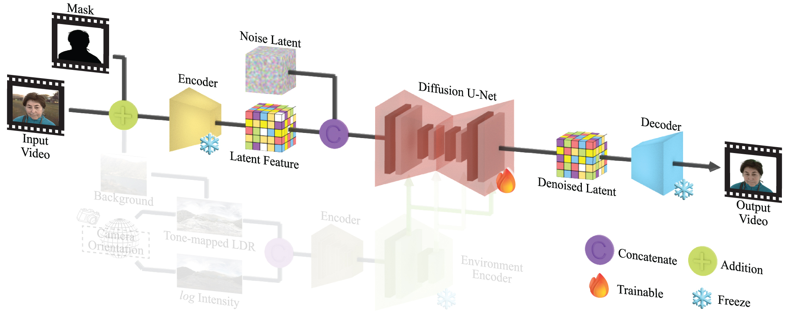

Pixel Cube: Diffusion-based Portrait Video Relighting Through Realistic Lighting Reproduction
Abstract
We present a diffusion-based method for photorealistic and temporally consistent portrait video relighting. Our model is trained on a hybrid dataset of real-captured and rendered dynamic portraits with diverse appearances, motions, poses, and known lighting conditions. To acquire realistic training data, we build an LED-based lighting system for high-speed video capture under controllable illumination. Using HDR environment maps and synthesized background images as controls, our model relights in-the-wild portrait videos while preserving identity, expressions, skin tone, wrinkles, and facial hair. Experiments show that our method generalizes well to unseen subjects, motions, and lighting, achieving high-quality results in realism, lighting harmony, and temporal consistency.
Pipeline

Delight stage: extracting illumination-independent portrait appearance from the input video.
Supplementary Video
Delighting Results
Relighting Results
Diverse Subjects and Scenes
Dynamic Lighting Scenes
Same Identity, Switchable Backgrounds
More Relighting Results
BibTeX
@article{zhang2026pixelcube,
title={Pixel Cube: Diffusion-based Portrait Video Relighting Through Realistic Lighting Reproduction},
author={Zhang, Yufan and Ji, Yu and Ajiboye, Ayo and Wu, Rundi and Guo, Yu and Zheng, Changxi and Ye, Jinwei},
year={2026},
publisher = {Association for Computing Machinery},
address = {New York, NY, USA},
journal = {ACM Trans. Graph.},
url={https://yufanzhang82.github.io/PixelCube/}
}